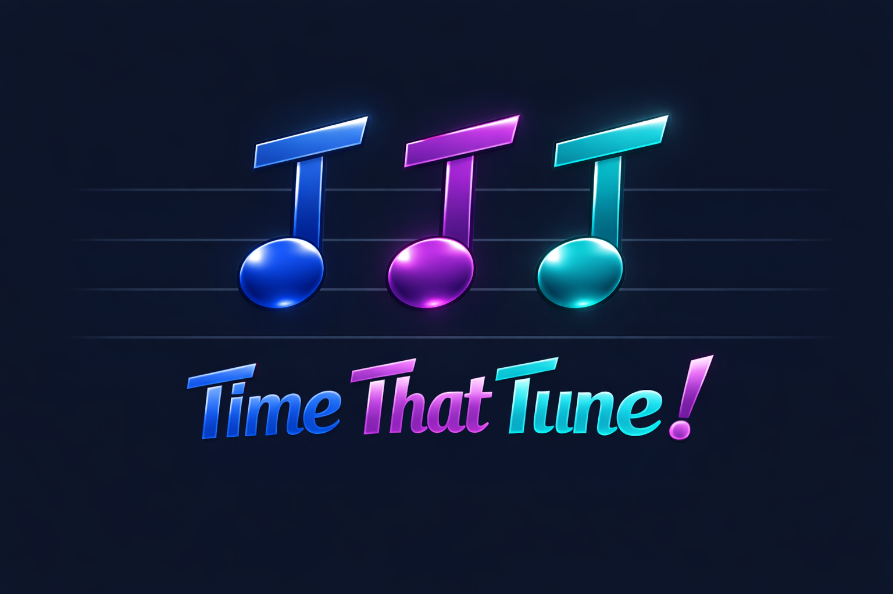

Today's artist
How fast can you name this song?

Today's artist
How fast can you name this song?
Listening…
Prototype build · 1,838 songs · 570 classic 70s artists · no leaderboard yet
Play. The clip plays for exactly the time you choose, then stops. The song clip is not generally the beginning of the song, it is a preview of some part of the song.Guess now — I know it! to skip the rest of the clip. Your score becomes the average of your bet and how long you actually listened — so it's always worth stopping early once you're sure, but betting low and being right is still your best score.Your score is seconds listened (or, if you solved it early, the average of your bet and actual time) + seconds spent answering + 15s per wrong guess. Lower is better.